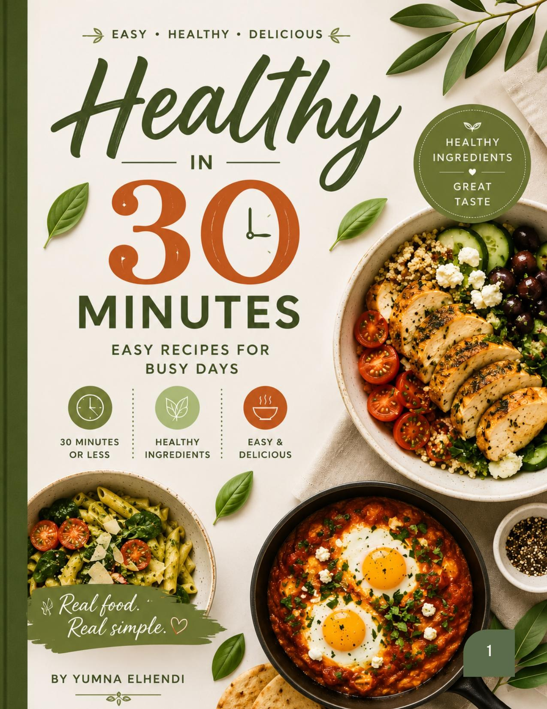
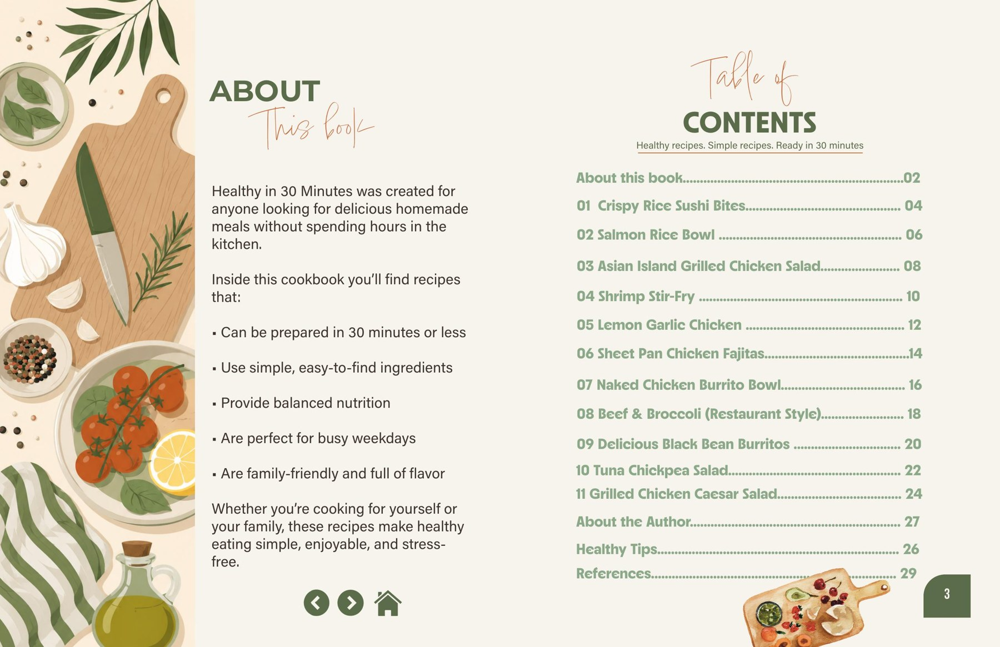

Healthy in 30 Minutes
Easy recipes for busy days.
Project Brief
Healthy in 30 Minutes is a cookbook and interactive recipe experience created for people who want homemade meals without spending hours in the kitchen.
The project combines editorial design with digital UX/UI. The print cookbook organizes recipes, nutrition facts, ingredients and directions into a consistent visual system, while the interactive prototype adapts the same idea into a faster, mobile-friendly way to search, save and follow recipes.

The Editorial System
The cookbook was designed around clarity and repeatability. Each recipe follows a consistent structure for prep time, cook time, total time, servings, nutrition facts, ingredients, directions and food photography so readers can scan information quickly.
Content Strategy
The book focuses on recipes that can be prepared in about 30 minutes or less, use simple ingredients, support balanced nutrition and work well for busy weekdays and family meals.
Visual Direction
Warm cream backgrounds, muted green accents, food photography and illustrated kitchen details create a friendly, approachable visual identity while maintaining clear hierarchy across a multi-page publication.
From Cookbook to Interactive Prototype
The digital version extends the same content into an interactive recipe experience. The prototype was designed around quick access to recipes and clearer step-by-step use while cooking.

Interactive Features
The Figma prototype includes a splash screen, recipe search, favourites, recipe cards, ingredient checkboxes, collapsible content, step-by-step directions and fixed navigation.
This allows the project to demonstrate both long-form editorial organization and interface thinking within the same visual concept.
Publication Scope
The cookbook includes eleven recipes, an introduction, healthy-eating tips, an author page and references. Recipe layouts include examples such as Crispy Rice Sushi Bites, Salmon Rice Bowl, Shrimp Stir-Fry, Lemon Garlic Chicken, Sheet Pan Chicken Fajitas, Beef & Broccoli and several salad and bowl recipes.
Outcome
Healthy in 30 Minutes became a cross-platform design project that connects editorial layout and interactive UX/UI. The finished work demonstrates information hierarchy, consistent multi-page design, content organization and the ability to translate one visual system from print into a functional digital prototype.